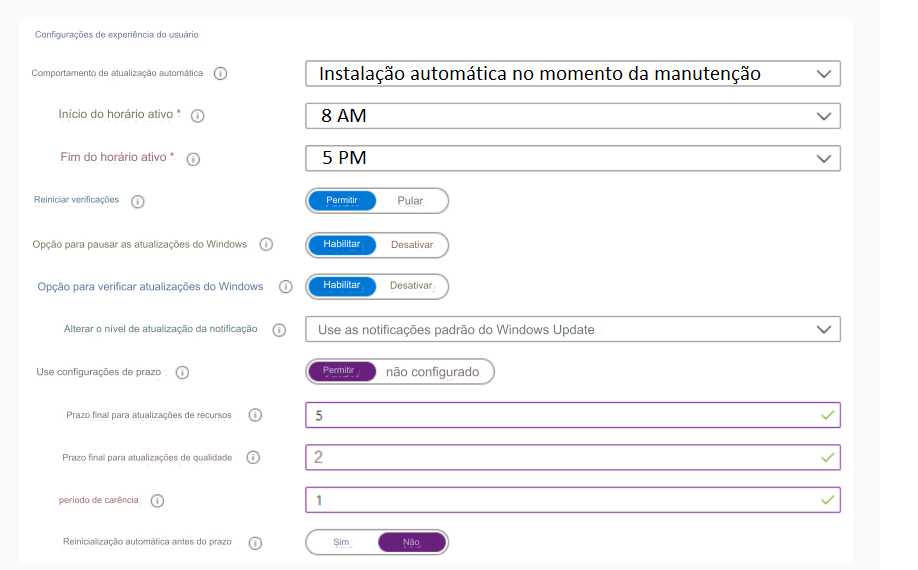
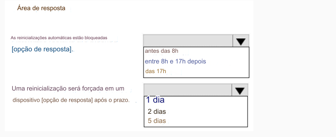

139-PONTO DE ACESSO
Você tem uma assinatura do Microsoft 365 que usa o Microsoft Intune.
Você planeja gerenciar atualizações do Windows usando o Intune.
Você cria um anel de atualização para Windows 10 e posterior e define as configurações de experiência do usuário para o
anel, conforme mostrado na exposição a seguir.

Use os menus suspensos para selecionar a opção de resposta que completa cada afirmação com base
nas informações apresentadas no gráfico.
NOTA: Cada seleção correta vale um ponto.
